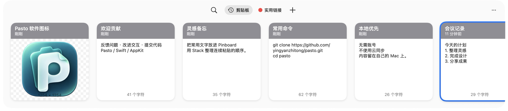

复制记录，不用再找一遍
文字、图片、文件和链接，自动收进历史。需要时打开面板，再次使用。
一句灵感、一张图片、一段常用文字。
让复制记录留在手边，下一次需要，轻松找回。
macOS 14+·Intel 与 Apple 芯片·免费开源
常用的文字、收藏的链接、
还没来得及整理的好想法。

把每天重复的小动作，变得更顺手。
文字、图片、文件和链接，自动收进历史。需要时打开面板，再次使用。
用分组收藏常用片段，用 Stack 整理待粘贴的顺序。让重复工作少一点。
本地识别图片文字，搜索已有识别结果。把截图里的内容，变成可用的文字。
少一次寻找，
多一点心流。
没有找到这条记录，换个关键词试试。
3 条演示记录
Pasto 不需要账号，不提供云同步。
剪贴板内容保存在自己的 Mac 上，
也可以暂停记录，或排除指定应用。
本地数据为明文存储，请妥善保管电脑及导出归档。
查看开源代码参考 Paste 的本地使用体验，Pasto 免费开源。
| 核心功能 | Paste | Pasto |
|---|---|---|
| 剪贴板历史与搜索 | ✅ | ✅ |
| 收藏分组与 Stack | ✅ | ✅ |
| 复制粘贴与自定义快捷键 | ✅ | ✅ |
| 图片文字识别（OCR） | ✅ | ✅ |
| AI 工具接入（MCP） | ✅ | ✅ |
| 系统“快捷指令” | ✅ | ❌ |
| 云同步、手机端与共享协作 | ✅ | ❌ |
| 联网链接预览 | ✅ | ❌ |
✅ 表示已有实现，不代表全部场景已验证。跨应用直接粘贴及完整交互仍待全面回归。
对照参考 Paste 6.6.6；Pasto 是独立项目，与 Paste 原厂无关联。
保留分组名称、颜色、排列顺序与组内内容。
只读导入，重复迁移不会覆盖你在 Pasto 中的编辑。
是。Pasto 的独立实现按 MIT 许可开源，无需订阅或原厂账号。原版研究材料的权利范围单独说明，详见仓库中的 NOTICE。
支持 macOS 14 及以上。一个 Universal DMG 同时包含 Intel 与 Apple 芯片架构，无需区分下载。构建通过不代表两个架构的所有功能均已完成回归。
下载并打开 DMG，将 Pasto.app 拖入 Applications，从应用程序目录启动，再推出安装镜像。直接粘贴到其他应用需要 macOS 辅助功能权限；仅保存和复制内容无需通过此权限发送按键。当前安装包采用临时签名，尚未经过 Apple 公证，请先阅读 Release 中的安装说明。
Pasto 不实现云同步，剪贴板数据保存在本地。MCP 是可选的本地工具接口；若你自行连接第三方 AI 客户端，该客户端如何使用所读取的内容取决于它自己的设置。分享归档或日志前，也请检查是否包含隐私。
尚未完全一致。Pasto 依据 Paste 6.6.6 的 REA / Ghidra 逆向证据独立实现本地功能，未完成全部原函数迁移或一比一验收。云同步、远程共享、联网预览不在实现范围内；系统“快捷指令”尚未完成接入。直接粘贴等交互的完整兼容性仍在完善。
从下一次 ⌘ C 开始。
免费下载 Mac 版更新日志与所有版本